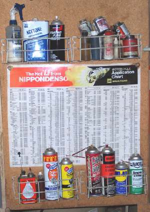
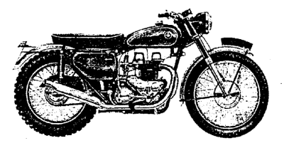
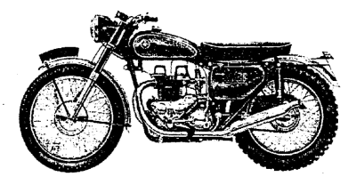

CHEMICALS

¶ Motorcycles use a lot of different types of chemicals and oils to keep them up and running. Here are a few that over the years, I have found useful. I will give the name of whatever oil or chemical I use, but it's not an endorsement. You don't have to use the same chemical if another brand will work. Remember, the important thing is that they work. You can get these at a local Auto or Motorcycle parts store. I put the ones I use the most, on a shelf, near where I work, so I can get to them easily. So, for your edification, here are the ones I tend to use the most.
- Penetrating Oil. Lots of times, bikes that have been sitting awhile have a lot of rust. For these bikes I like to use some sort of penetrating oil similar to WD-40. I prefer STP penetrating oil but I can't seem to get it any more. WD-40 does have the benefit of pulling water off the part treated with it, however, it does not seem to work good as a lubricating oil. Tends to leave a hard residue. So loosen the stuck part with WD-40 then lube the part with some other type of oil.
I've started using a penetrating oil, made by Kano, called "Kroil" which seems to works quite well. You want to spray on the penetrating oil, let it penetrate for awhile and try to take the part off. It may help to work the part back and forth, worrying it. The only problem I've found with penetrating oils is that they don't like to stick around. They seem to disappear after a day or two so remember to relube with regular oil.
You can also go Ah La Natural with Viniger or Lemon Juice. Both seem to work on dissolving rust.
- Light Snowmobile Oil. After using a penetrating oil, to loosen things up, I like to use a light, general purpose, snowmobile oil. It penetrates well and tends to stay where you put it. I use Mac's Snowmobile Oil.
- Contact Cleaner. Electrical contact cleaner is great for cleaning corrosion off anything electrical. After it dries there's no residue left on the electrical parts. It also tends to dry out any moisture on the electrical contacts. Spray it on and work the switch, or whatever, back and forth to clean it off. Then spray more on to kinda wash the crud away. I like smell of the stuff Kal-Gard put out, but I don't see them anymore. Maybe they are out of business, but I don't care... I got a whole case!
- Acetone. Use acetone to clean anything metal. Leaves it totally grease free.
- Drive Chain Oil. I use any brand name, o-ring compatible, motorcycle chain oil that's on sale.
- Armor All. I spray this on all rubber or plastic parts. Tends to rejuvenate most everything. A lot of times, it will even bring the color back. Good stuff.
- Starting Fluid. Handy to get a reluctant engine to start. Use sparingly. A little goes a long way.
- Non-Hardening Gasket Cement. I use Copper Coat by K&W. Use on gaskets that you should have replaced, but are too cheap to do so. Gaskets that are old and hard, but still in one piece.
- Copper Spray-a-Gasket. Made by Permatex. Sprays on nice and neat. Use same as above.
- Spray Gasket Remover. Makes removing gaskets easy.
- Hylomar Gasket Dressing. Made by Loc-Tight. Use same as above. Alas, It seems it is no longer available. It was good stuff.
- Two and Four stroke Oil. Use a small bottle of each, for two and four stroke assembly.
- Brake Kleen. Spray this on oily brake shoes and pads to take the oil out of them.
- Gunk. This used to come in quart bottles, but now you can only get it as a spray. It makes oily dirt soluble with water. Spray it on and hose off with water. Now you have a nice clean engine to work on.
- Dry Slide. I use this on old cables that have a lot of cracks in the outer covering. It's graphite in a solvent. It flows in tight places, the solvent evaporates, leaving the graphite, and graphite is a great lubricant.
- Spray Carb Cleaner. I spray the carb cleaner into a small glass jar. Then put small carb parts, like jets, in it and let them soak. Also use it to spray through small passages and jets, in the carb body. Use goggles to protect your eyes, and look at the passages when you spray. If you can see the spray come through the passages, you can be pretty sure the passages are clear.
- Loc-Tight. There are several different flavors of Lock-Tight. At least get the standard one. Use it wherever you have bolts or nuts that tend to come loose.
- Valve Guide lubricant. Briggs and Stratton # 93963. Use on valve stems, shafts, places like that. Can be used as an anti-seize compound.
- Anti-Seize Compound. I use "Never-Seez", but there are a number of brands, just pick one. Put this on shafts that will be exposed to the weather, like wheels on rototillers, axle shafts, or nuts and bolts. I also use it on spark plug threads. Makes things much easier to disassemble in the far flung future.
- Yamabond # 4. Used to get it from Yamaha but now you have to use ThreeBond Liquid Gasket #1194. Best stuff on the market. Use on gasketless mating surfaces like crankcases. Works great for filling in gouges in gasket surfaces.
- Tinners Fluid. A weak acid used to prepare old wiring so hot solder will stick. Get it from a hardware store. The fancy boys say don't use it on wiring because it can cause corrosion... yeah right. Like the wire isn't corroded already.
This is just a partial list, but it's a place to start. Add to it as you go along.

 |
 |
Copyright © 1999-2002 dansmc.com. All rights reserved.